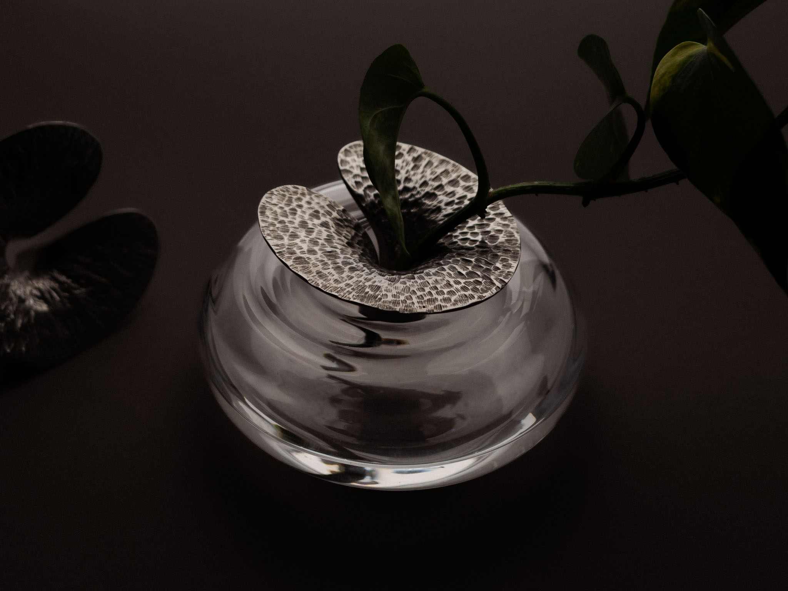
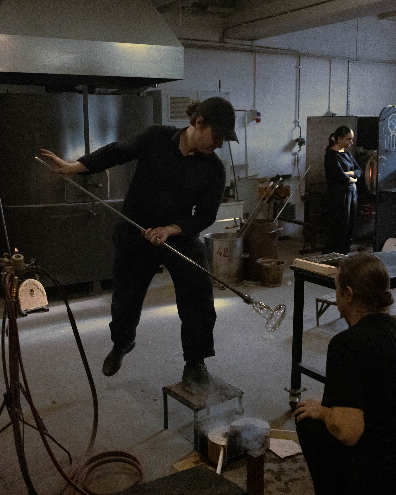
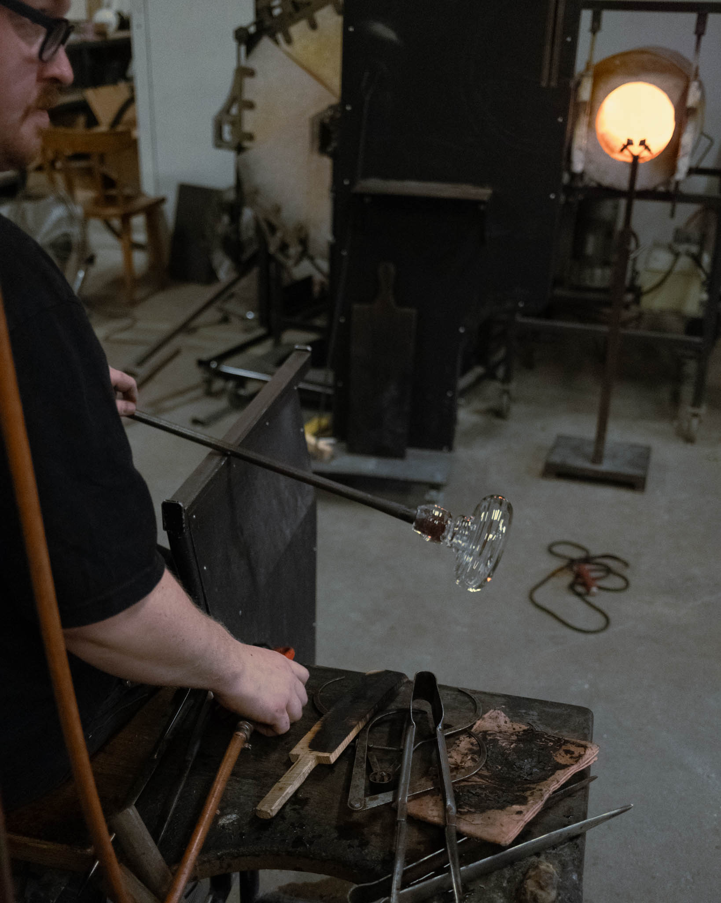
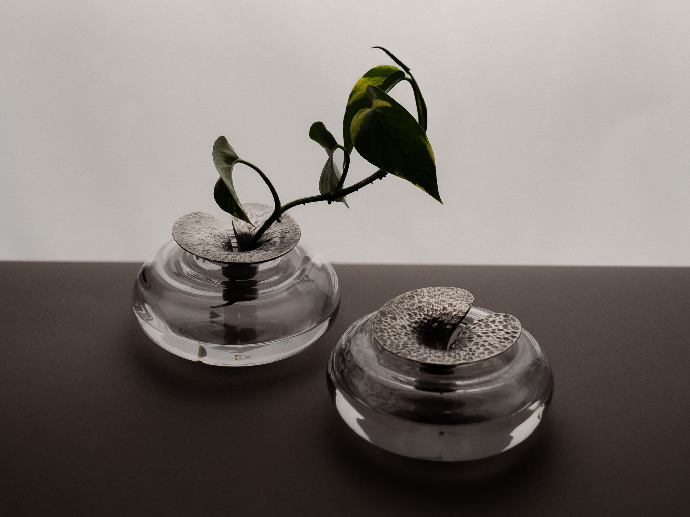
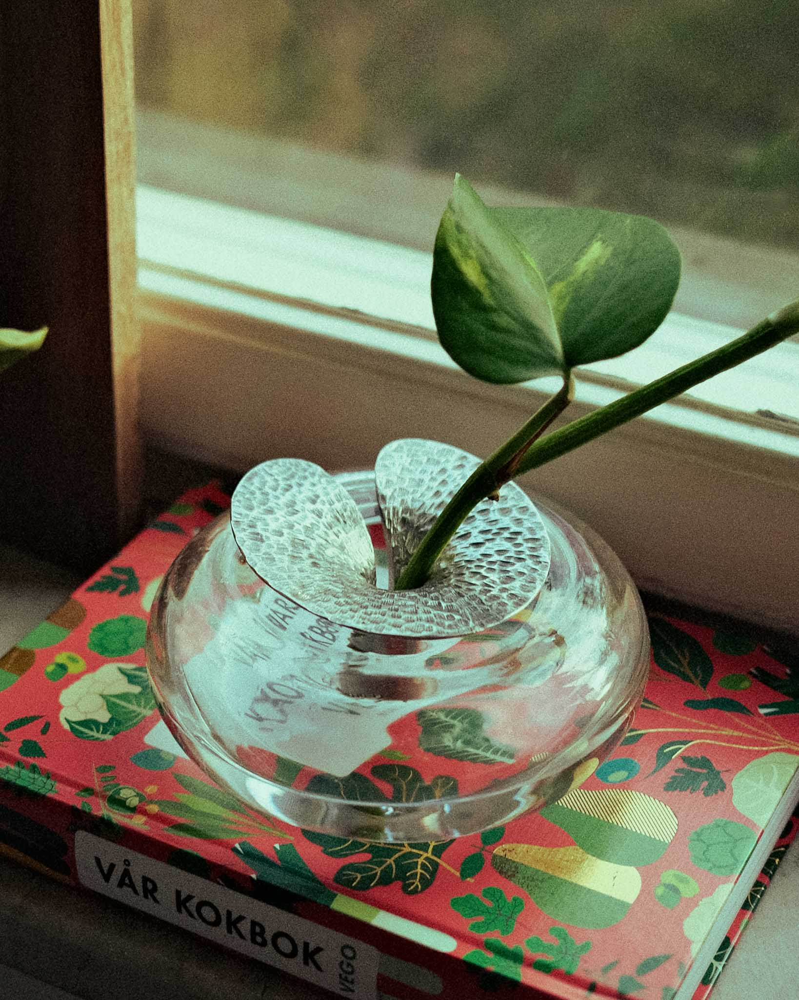
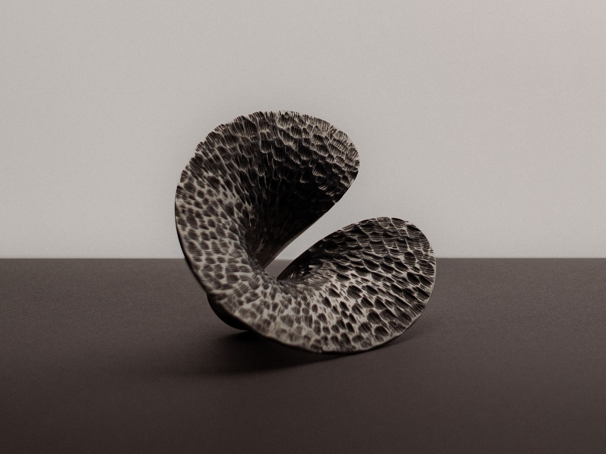
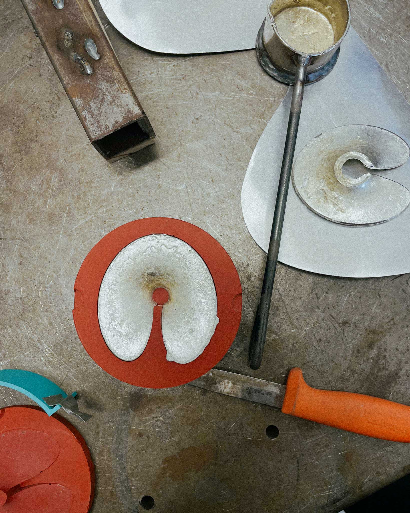
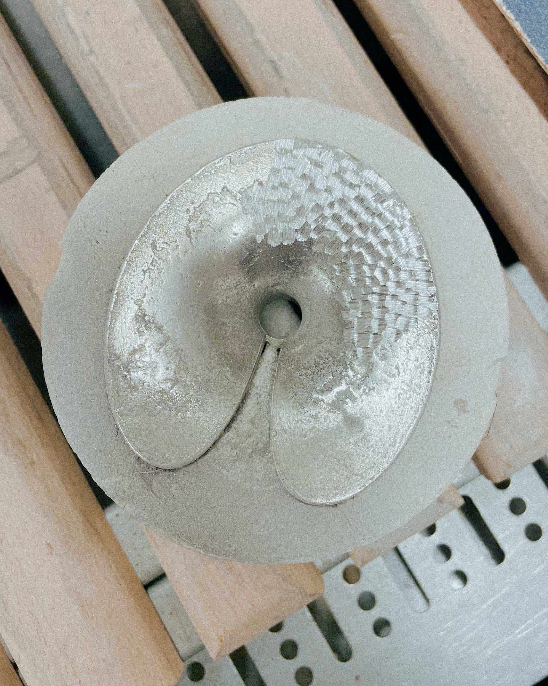

Vattenlilja
Vattenlilja (Water Lily) is a two-part vase for cuttings and small floral arrangements. The glass base is optic-blown to resemble a rippling water surface, while the collar that holds the stems in place is cast in pewter.
The vase was created in collaboration with Svenskt Tenn and was blown in the hot shop at STHLM Glas.








